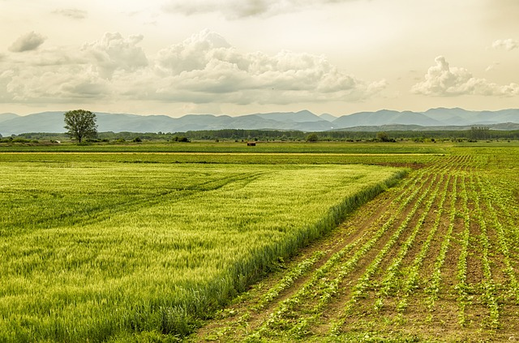
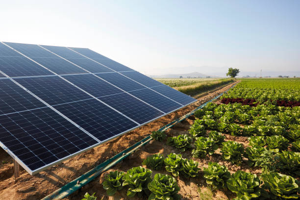

Agricultural Services

Crop Farming & Management
We specialize in innovative crop farming techniques and management, providing sustainable solutions for large and small-scale farms.

Fresh Produce Distribution
Our distribution network ensures the efficient delivery of fresh produce from our farms to markets across the country.

Grain & Nuts Distribution
We supply high-quality grains and nuts to local and international markets, contributing to global food security.

Farming Systems Management
We implement modern farming systems that maximize efficiency and sustainability, promoting growth and productivity.